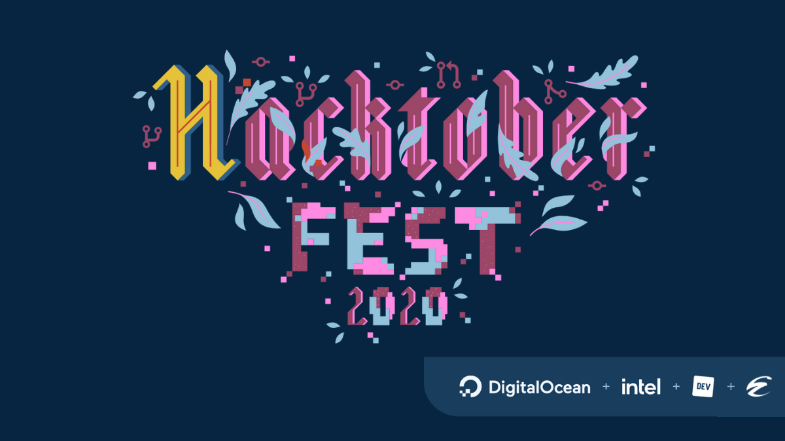

Hacktoberfest Ecuador
Durante todo el mes de octubre estaremos teniendo sesiones donde podrás estar en contacto con maintainers de diferentes proyectos Open Source que te ayudarán a contribuir a estos proyectos. No se requiere ningún conocimiento previo, ¡sólo ganas de aprender!
El evento kickoff será este 3 de octubre, registro en https://organize.mlh.io/participants/events/4583-hacktoberfest-ecuador-online. Recuerda que las sesiones serán a lo largo de todo el mes, suscríbete a nuestros canales para que mantengas informada/o de las fechas.
Si eres maintainer, registra tus proyectos en https://forms.gle/dt9sgwkbYnfST9GPA
¿Qué es hacktoberfest?
Hacktoberfest — traído gracias a DigitalOcean en conjunto con Dev & Intel — es una celebración de un mes de software open source. Mantenedores son invitadas/os a promover sus proyectos, y contribuidores tienen la oportunidad de retribuir a sus proyectos favoritos u otros que hayan descubierto. Ninguna contribución es pequeña — arreglos de bugs y actualización de documentación; son ambas formas válidas de participar.
Plataforma
La plataforma que usaremos durante el evento es element.io. Crea tu cuenta en https://app.element.io/#/register. Una vez que tengas tu cuenta creada, puedes unirte a nuestra comunidad en https://app.element.io/#/group/+hacktoberec:matrix.org.
En la comunidad existen varios rooms:
General: El chat principal del evento
-
Pull Requests: ¡Cada vez que termines un pull request, puedes registrarla en esta sala! Estaremos realizando un par de sorteos entre las personas que hayan creado un pull request.
El mensaje debe contener el enlace al pull request y con qué lo hiciste (café, cerveza, horchata, agua, etc).
Reglas & Premios
Primero, regístrate en el sitio de Hacktoberfest en https://hacktoberfest.digitalocean.com. Para que califiques para la camiseta de edición limitada del Hacktoberfest, debes haberte registrado y haber realizado cuatro pull requests entre el 1 y 31 de octubre. Pull requests deben ser hechas a cualquier repositorio público en GitHub, no sólo los que tienen la etiqueta Hacktoberfest. Si un mantenedor reporta tu pull request como spam o no está alineada con el código de conducta del evento, no serás elegible para participar.
Conéctate con otros participantes del Hacktoberfest usando @DigitalOcean, @hacktoberfest, #hacktoberfest es tus redes sociales.
¿Eres nueva/o en DigitalOcean? Recibe USD $100 en créditos en https://do.co/hacktoberfest100.
Código de Conducta
Los eventos de Hacktoberfest son amigables, abiertos, e inclusivos. Por favor leer nuestro código de conducta antes de asistir al evento. Happy hacking!
Proyectos
Varios maintainers han propuesto sus proyectos, en cada sesión podrás contar con la ayuda de algún maintainer de acuerdo a su disponibilidad. Te aconsejamos elegir el proyecto que más te llame la atención, que uses, o que quieras aprender de.
Python Ecuador
Web de la comunidad de Python Ecuador. Proyecto para todo tipo de contribuidores, especialmente para los que están iniciando en el mundo del open source.
https://github.com/PythonEcuador/PythonEcuador.github.io/
Maintainers:
JavaScript
-
javaScript Ecuador: Web de la comunidad de JavaScript Ecuador. Proyecto para niveles básico e intermedio, la idea es que más personas interesadas en el lenguaje de JavaScript se unan a la comunidad open source.
Maintainers:
-
Pettnaut: es un proyecto en estado inicial que trata de conectar a las personas que quieren adoptar mascotas, con las que mascotas que son rescatadas. También ayudará a encontrar mascotas perdidas gracias a la comunidad.
Maintainers: @renatojobal
Python
Vim/Neovim
-
fzf-checkout.vim: ¡Administra tus ramas y tags con fzf desde vim/neovim! Proyecto para personas familiarizadas con lo básico de Vim/vimscript.
Maintainers: @stsewd
-
nvim-treesitter: Integración de treesitter para Neovim. Proyecto para personas familiarizadas con Neovim, también hay tareas que requieren Lua.
Maintainers: @stsewd
-
sphinx.nvim: Integraciones de Sphinx para Neovim. Proyecto para personas familiarizadas con Neovim y Python.
Maintainers: @stsewd
-
gx-extended.vim: Extiende el comando gx para que funciones con más que sólo URLs. Proyecto para personas familiarizadas con vim/vimscript.
Maintainers: @stsewd
Latino
Lenguaje de programación inspirado en Python y Lua con sintaxis en español. No es un psuedolenguaje, es un lenguaje de programación que esperamos crezca al nivel de los más importantes lenguajes, y para ello nos gustaría darlo a conocer.
https://www.lenguajelatino.org/
Maintainers:
Jorge Luis González
Otros
¿No está tu proyecto favorito? ¡Inscríbete como maintainer!